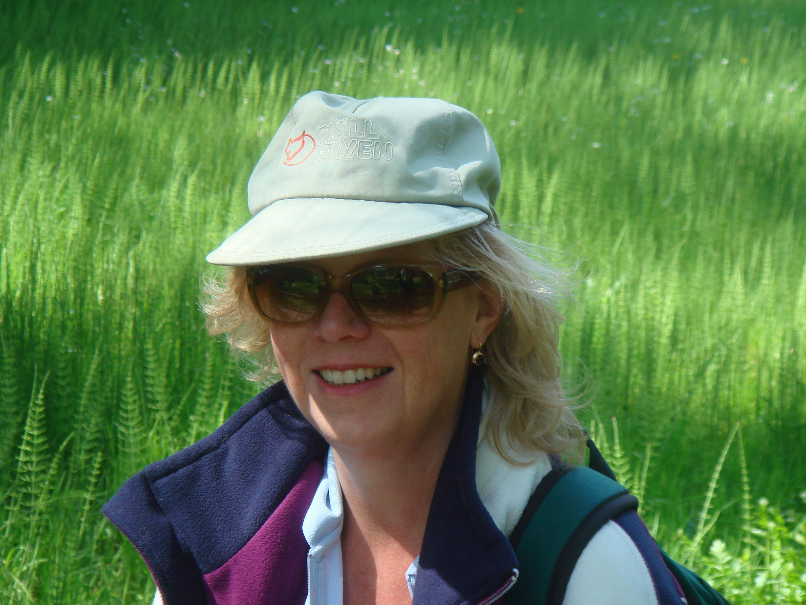

Hardlopen
Ik vind het heerlijk om hard te lopen, vooral in de natuur. Het geeft me een gevoel van vrijheid en ontspanning.
Ik ben Edith Donia Nota en ik woon samen met mijn partner en onze kat in Norg.
Bloemschikken
Wandelen
Ik vind het heerlijk om hard te lopen, vooral in de natuur. Het geeft me een gevoel van vrijheid en ontspanning.
Ik hou van het creëren van mooie bloemstukken. Ik vind het een fijne manier om creatief bezig te zijn en iets moois te maken.
Wandelen op het strand en met blote voeten in zee is voor mij heel ontspannend. Het geluid van de golven en het gevoel van het zand tussen mijn tenen geeft me rust.
